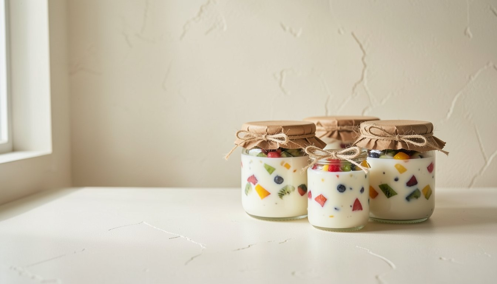

Le yaourt, comme à la ferme.
Lait de ferme, fruits de saison, ferments. Préparé à la main la veille de la livraison.
Les yaourts
Prix au pot. Composez votre panier parfum par parfum.
De la ferme au pot
-
Le lait du matin
Collecté à l'aube chez des éleveurs voisins, il arrive à la laiterie encore frais. Jamais de poudre de lait, jamais de lait reconstitué.
-
Une nuit de patience
On ajoute les ferments, puis on laisse le temps faire. Le lait prend doucement : c'est ce qui donne la texture épaisse et le goût franc.
-
Le fruit, puis le pot
Les fruits de saison sont préparés à la main, puis les pots en verre sont remplis un à un. Ils partent en livraison dès le lendemain.
Ce qu'en disent nos clients
« La texture du grec est bluffante, épaisse et à peine sucrée. Nous avons arrêté d'en acheter en supermarché. »
« La fraise des bois, mes enfants en réclament tous les matins. »
« Le système de pots consignés est malin, et la coco végétale est une merveille. »
Témoignages d'exemple, à remplacer par ceux de vos clients.
Questions
Une autre question ? Écrivez-nous.
Comment se passe une commande ?
Vous composez votre panier, puis vous indiquez votre nom et votre adresse. Un récapitulatif s'ouvre dans WhatsApp : vous nous l'envoyez, et nous confirmons votre commande dans la journée.
Comment payer ?
À la livraison ou au retrait, en espèces ou par virement. Aucune coordonnée bancaire n'est demandée sur le site.
Combien coûte la livraison ?
3,00 €, offerte dès 20,00 € d'achat. Le retrait sur place est toujours gratuit.
Combien de temps se conservent les yaourts ?
Environ quinze jours au réfrigérateur. La date limite est inscrite sur chaque pot.
Que faire des pots vides ?
Rapportez-les à la livraison suivante ou à la boutique : nous les relavons et les réutilisons.
Y a-t-il des allergènes ?
Nos yaourts contiennent du lait. Les recettes végétales contiennent des fruits à coque (amande, coco). La liste complète des ingrédients est disponible sur demande.
Une question, une commande spéciale ?
Nous répondons dans la journée, du mardi au samedi.
Nous écrire sur WhatsAppBoutique
12 rue des Prés
00000 Votre-Ville
Horaires
Mardi au samedi
9 h à 18 h